今回私は、身に着けるスマホホルダーと音楽を再生できるカードを制作しました。
余談 製作意図
元々は、仮面ライダーのベルトのようなものを作ってみる予定でした。しかし、複雑な構造とギミックをどうするか悩みました。
そこで、このアイデアを今の自分が製作できる形に変容させました。
それが、「スマホにカードをかざして音楽を流す」というものでした。
使用したもの
- MagSafe対応ステッカー(ダイソーで購入)
- MagaSafe対応 スマホリング(Anker 610 Magnetic Phone Grip (MagGo))
- NFCタグ (カードタイプ白)
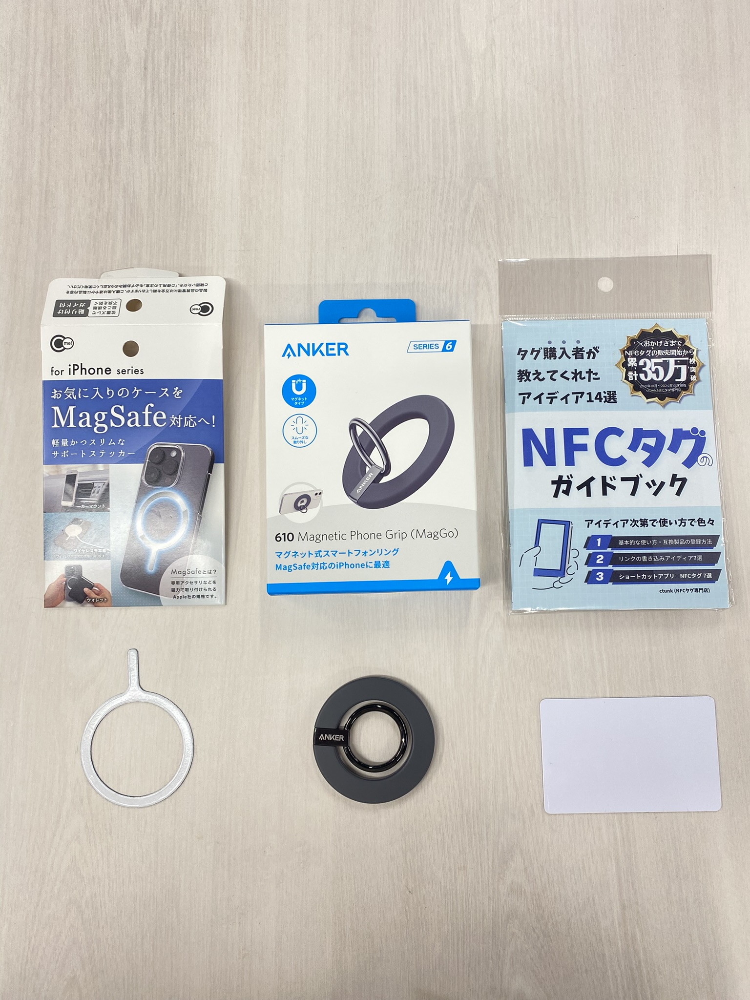
完成品 スマホホルダー

ミュージックカード
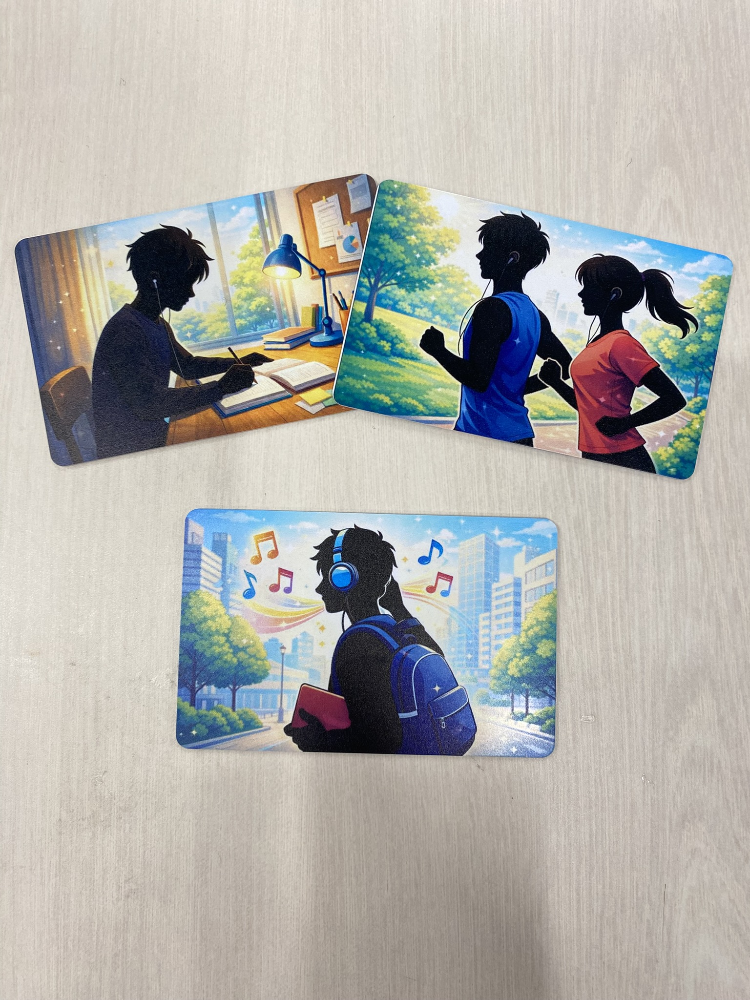
作品説明
スマホホルダーは土台を3Dプリンターで作り、MagSafeをはめ込んだ。スマホケース(これはネット上の3DデータからTPUフィラメントで作成)には先ほどのステッカーを貼りつけてある。
ミュージックカードはNFCカードにChatGPTで制作した絵を、UVプリンターで印刷しました。
使い方は腰、もしくはカバンのベルトにスマホホルダーを通して使用します。
スマホをくっつけて、ミュージックカードをかざすと、、、
アプリが開いて、自動で音楽が流れる！
種明かし
今回はIPhoneでの説明になります。(Androidの人、すみません)使うアプリは「YouTube Music」と「ショートカット」これだけ。
1.「YouTube Music」でプレイリストを作る。
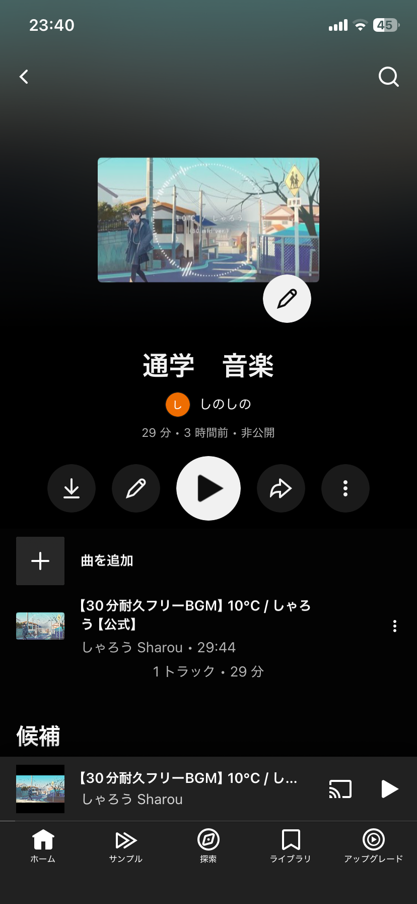
2.アカウントアイコンから「設定」→「Siriショートカット」→「＋」を押してショートカットを追加。
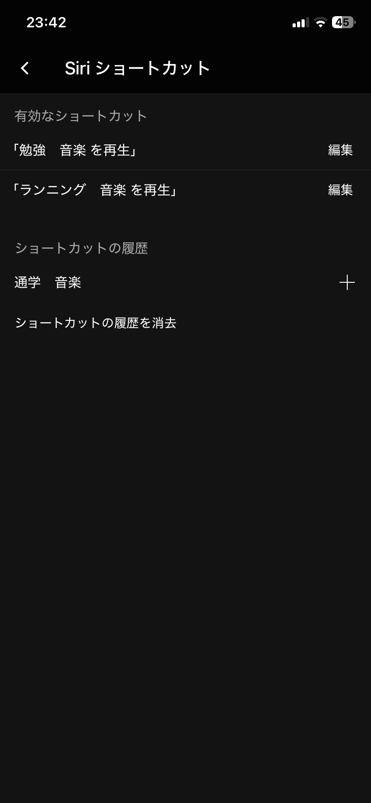
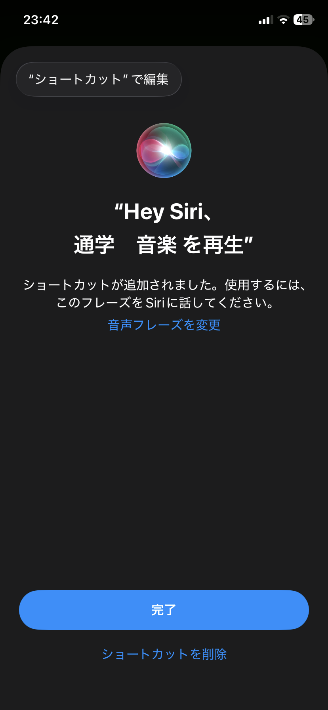
「YouTube Musicでのショートカット作成（1と2）まで」
3.「ショートカット」のアプリから、「オートメーション」→「＋」を押して新規作成→「NFC」。
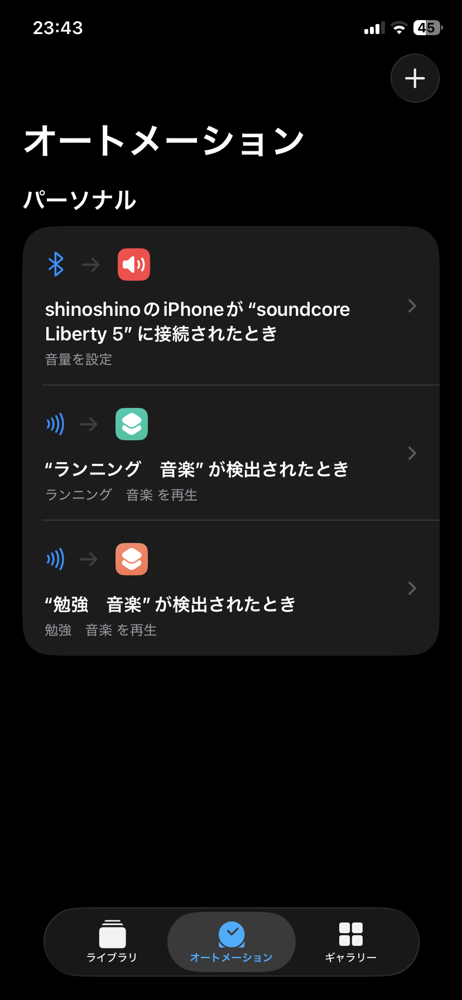
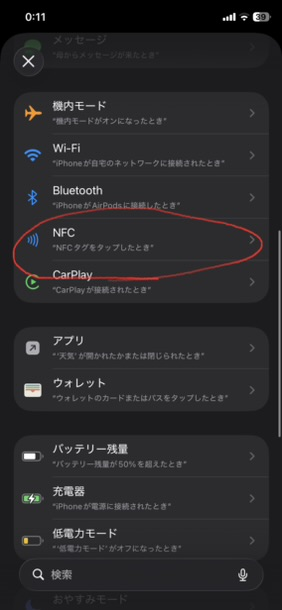
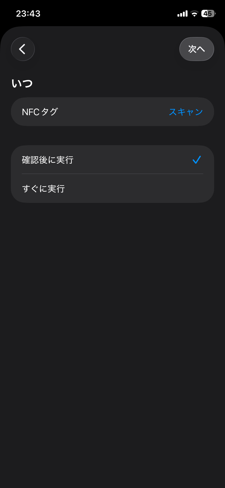
4.NFCタグをスキャンして、名前を付ける。
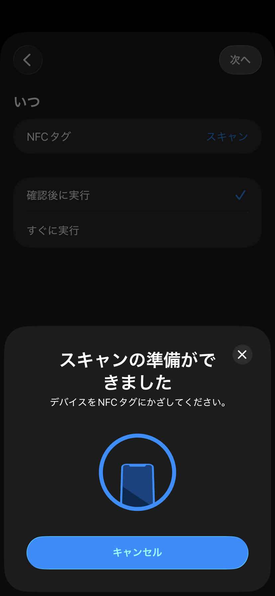
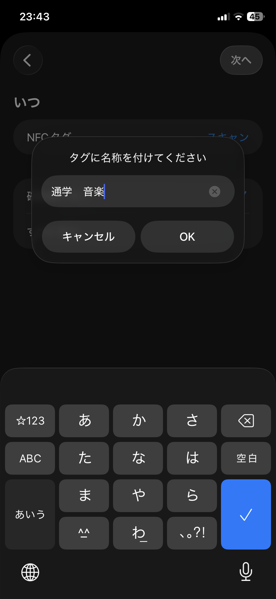
5.「すぐに実行」にして「次へ」。
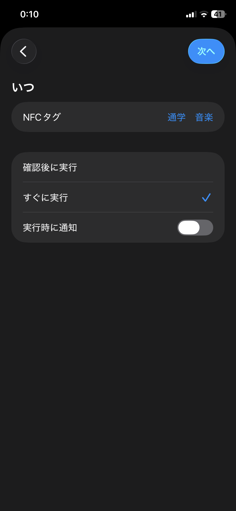
6.「マイショートカット」からさっき付けた名前のショートカットを選択すれば、設定完了。
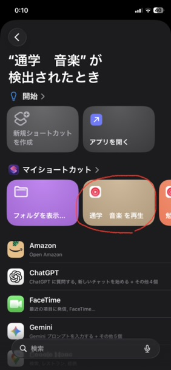
あとはカードをかざせば、音楽が流れるようになります。
終わりに
既存の製品と組み合わせて実用的なものが作れました。とくにNFCタグは音楽以外にも使い道が何百とあるので、他の使い道を試行錯誤してみたいと思います。
使用機材
3Dプリンター(PLA&TPUフィラメント)UVプリンター
STLファイルとイラスト例
スマホホルダースマホホルダーのベルト通し
ミュージックカード イラスト例その１
ミュージックカード イラスト例その２
ミュージックカード イラスト例その３